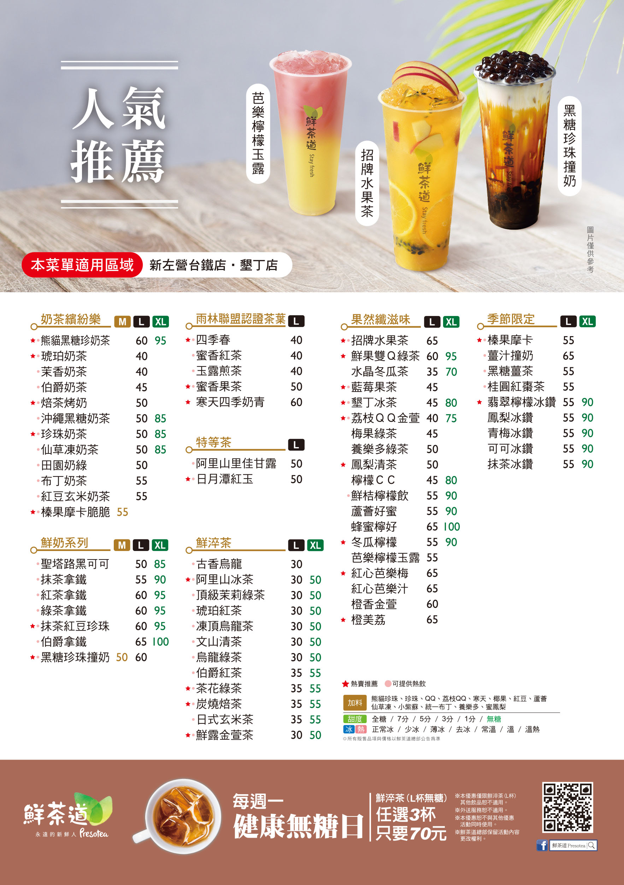

-品牌價值觀-
人的慾望越多，壓力就愈大，想法越複雜，就會不容易快樂。我們相信只有回歸最單純簡單的自我，敢於捨去外在添加，才能擁有真正的身心靈的健康快樂！-品牌主張-
初心是每個人走向世界的起點，也是每個人走向世界的終點。時常重新開機，就會幫助我們肯定自己真正的品味、沈澱屬於自己的價值，也讓我們在前往未來的旅程中，一直活出自己美好！-品牌理想-
於是，鮮茶道相信：如果我們可以擁抱自己的初心，世界會更美好！-菜單-


清心福全企業集團秉持「誠信」、「用心」、「創新」、「惜福」之精神，力求務實經營、嚴謹管理、穩健成長、永續發展，不斷精進創發，歷久彌新，深耕台灣，弘揚台灣茶飲文化。


「清心福全」深信企業經營之道首重「誠信」，創立以來力求務實經營、嚴謹管理、穩健成長。我們堅持以「誠信」原則服務消費者，講究真材實料、貨真價實、童叟無欺。而與加盟店、協力廠商之互動，亦以「誠信」為準則，強調真誠、信用，彼此提攜、策進，以凝聚向心力，開創互惠互利、共贏共榮的璀璨願景。

「清心福全」強調顧客至上、品管優先、服務第一，「用心」專注於每一環節。我們充分了解消費者的需求，嚴選優質茶葉、食材與包材，落實食品安全衛生之把關，訂定標準作業程序，堅持以「手工」與「客製化」沖泡、調製飲品，期許所奉上的每杯手搖飲品，都能帶來「清」澄「心」靈、「福」澤「全」備的富足感。